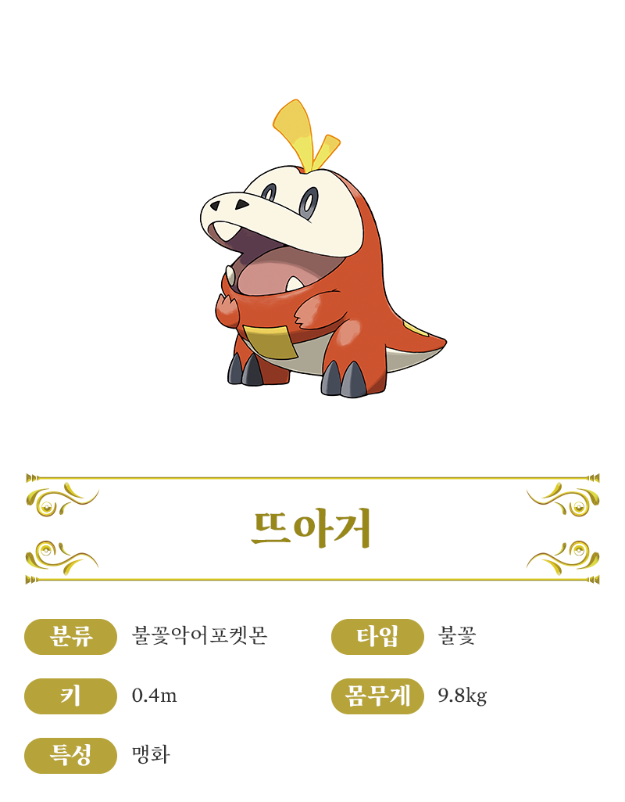

스타팅 포켓몬
나오하
꾸왁스
뜨아거
뜨아거

열을 흡수하는 비늘
배와 등에 있는 네모난 비늘로 외부의 열을 흡수해서, 불꽃 에너지로 변환합니다. 비늘은 항상 촉촉하고 따뜻하나, 때로는 고온이 될 때도 있습니다.
넘치는 불꽃 에너지
머리 위에 일렁이는 것은 체내에서 흘러나온 불꽃 에너지입니다. 뜨아거의 감정이 고조되어 흥분하면 방출하는 불꽃의 양도 많아집니다.